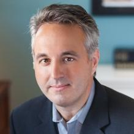

Leadership Team
Industry Advisory Board Leadership
The Industry Advisory Board (IAB) consists of designated representatives of the center members, which are the companies, non-NSF federal and/or state government agencies who have invested the annual fees for membership in the CAC. The IAB selects a chair and vice chair to conduct the business of the center, which takes place at periodic teleconferences of all IAB representatives and at two designated semi-annual meetings of the entire center that are usually conducted in person at one of the CAC sites, or at a convenient intermediate location, or virtually due to COVID-19 pandemic. The IAB selects the research projects of the center as a whole, approves the budgets, approves and revises bylaws and policies, and is responsible for coordinating work on all such topics with the assistance of the center and site directors listed below, consistent with National Science Foundation (NSF) guidlines for its Industry-University Cooperative Research Centers (IUCRC) program.
| Name | Contact | ||
|---|---|---|---|
| Jon Hass, Dell EMC, Chair |
Jon Hass is a Senior Distinguished Engineer at Dell, Inc. in the CTO organization working on system and infrastructure management architecture and standards. Jon is one of the architects and contributors to the Redfish API standard and contributed significantly to several DMTF standards including the SMASH & DASH standards. Jon has authored or contributed to over 30 DMTF specifications and has spent the last 30 years involved in industry standards and has also contributed to various other standards including IPMI, SMI-S, HL7 and GKS. Jon's 30-plus year career in the computing industry includes client and server systems management firmware and software architecture, storage management software, interactive television systems software, multi-media products including kiosks, firmware and device driver architecture and development, networking and communications protocols. At Dell, Jon is focused on the manageability interfaces and solutions across the Dell product portfolio. |
Contact: jon.hass@dell.com |
Center Directors
The Center Directors manage overall industry and NSF relations, set the tone and policies for the CAC under direction of the IAB leadership, and communicate and coordinate between sites to keep the overall CAC program on track. They report to the IAB at each semi-annual meeting on the center status, current primary and affiliate sites, center finances and research program, research topics and future directions, center output, results, and related activities. They also report metrics on these topics annually to the NSF in a written report, and perform other duties on behalf of the IAB.
| Name | Contact | ||
|---|---|---|---|
| Alan Sill, Co-Director |  |
CAC Center Co-Director Dr. Alan Sill holds positions at Texas Tech as Managing Director of the High Performance Computing Center and Adjunct Professor of Physics. Dr. Sill holds a PhD in particle physics from American University and has an extensive track record of work in scientific computing. He has published extensively in topics spanning cloud and grid computing, scientific computing, particle and nuclear physics, cosmic ray physics and radioisotope analysis. He serves as President of the Open Grid Forum, an international computing standards organization. He is an active member of the IEEE Standards Organization, DMTF, and other computing standards working groups, and serves either directly or as liaison for the Open Grid Forum on several national and international standards roadmap committees. He has helped to launch several large-scale cloud and grid computing projects, including the Open Science Grid (OSG), the Worldwide Large Hadron Collider Grid, Southeastern Universities Research Association SURAgrid, and Texas Internet Grid for Research and Education (TIGRE), and has served as general chair, program committee chair, or principal organizer for several different international conferences including the IEEE/ACM Utility and Cloud Computing (UCC) and Big Data Computing, Applications, and Technologies (BDCAT) and IEEE International Conference on Autonomic Computing (ICAC), as well as the ongoing set of workshops on Data Center Automation, Analytics, and Control (DAAC) held at the IEEE/ACM International Conference for High Performance Computing, Networking, Storage, and Analysis (Supercomputing) conference series. Sill is a past member of the editorial board for IEEE Cloud Computing and current member of the advisory boards for the StandICT international standards coordination project and several other EU-funded projects. Further biographical information for Dr. Sill is available on EDUCAUSE. |
Texas Tech University |
| Salim Hariri, Co-Director |  |
CAC Center Co-Director Dr. Salim Hariri is Professor of Computer Science and Director of the Autonomic Computing Laboratory (ACL) at University of Arizona, and served as previous Site Director for the CAC at U of A. He is and one of the leading experts in the fields of autonomic computing and virtualization, author of four scholarly books and monographs and published extensively in the leading journals and conferences in these areas. He holds a PhD in Computer Engineering from the University of Southern California and an MSc in Electrical Engineering from The Ohio State University. The research conducted in his lab focuses on autonomic computing, self-protection of networks and computers, self-control and management of network centric systems, high performance distributed computing, agent-based control and management of networked systems, performance analysis of parallel and distributed systems, software design tools for large scale interactive networked systems, high speed networks and communications protocols, cyber security , and proactive network management. Professor Hariri has served as the general chair or on the program committees and steering committees for the IEEE International Conference on Autonomic Computing (ICAC), International ACM Symposium on High Performance Distributed Computing (HPDC), and IEEE International Conference on Computer Systems and Applications. Dr. Hariri is also Editor in Chief of the Journal of Cluster Computing, which is a premier forum for presenting the latest research and applications in parallel processing, distributed computing systems, cloud computing, virtualization and computer networks. |
University of Arizona |
Site Directors
The CAC university site directors allow site research programs to be managed locally at each university, facilitate reporting to NSF and communication with researchers and local university administration, and coordinate with the center directors to carry out the research program selected by the IAB. The current CAC primary and affiliate site directors and institutions are listed below. Primary sites have multi-year grants from NSF that cover the administrative costs of running the center at their universities, and can optionally sponsor affiliate sites that work with the CAC through their sites. Texas Tech University and University of Arizona are CAC primary sites currently in Phase II in the NSF IUCRC program, supported by NSF through awards CNS-1939140 and CNS-1624668.
| Name | Contact | ||
|---|---|---|---|
| Yong Chen, Site Director, Texas Tech University |  |
Dr. Yong Chen is an Associate Professor and Director of the Data-Intensive Scalable Computing Laboratory in the Computer Science Department of Texas Tech University. His research focuses on data-intensive computing, parallel and distributed computing, high-performance computing, cloud computing, and computer systems in general. He has published over 100 research papers in international journals and conferences. His research has been funded by the National Science Foundation, Department of Defense, Department of Energy/Argonne National Laboratory, Lawrence Berkeley National Laboratory, National Security Agency, Dell EMC, Nimboxx, Jabil/Stack Velocity, Oak Ridge Associated University, and NVidia. He has also served as editors, chairs, and program committee members for numerous international journals, conferences, and workshops. He received several awards for his research and teaching activities including Texas Tech University Mortar Board and Omicron Delta Kappa Outstanding Faculty Award, Texas Tech University Whitacre College of Engineering Research Award, IEEE TCSC (Technical Committee on Scalable Computing) Young Achievers Award, the Ralph E. Powe Junior Faculty Enhancement Award, ACM/IEEE Outstanding High Performance Computing Ph.D. Fellowship, several Best Paper Awards and Best Paper finalist and Best Student Paper finalist at the ACM/IEEE Supercomputing Conference (SC). He led the Student Cluster Competition team for Texas Tech University at the 2012 ACM/IEEE Supercomputing Conference. |
Texas Tech University |
| Ali Akoglu, Site Director, University of Arizona |  |
Dr. Ali Akoglu is the Director of the Reconfigurable Computing Lab at University of Arizona and Director of the NVIDIA CUDA Teaching Center. He received his Ph.D. degree in Computer Science from the Arizona State University in 2005. Dr. Akoglu is an expert in high performance scientific computing and parallel computing with a primary focus on restructuring computationally challenging algorithms for achieving high performance on field programmable gate array (FPGA) and graphics processing unit (GPU) hardware architectures. He has been involved in many crosscutting collaborative projects with the goal of solving the challenges of bridging the gap between the domain scientist and highly-parallel hardware architectures under the umbrella of organizations such as the BIO5 Institute and iPlant Collaborative. His research projects have been funded by the National Science Foundation, US Air Force, NASA Jet Propulsion Laboratories, Army Battle Command Battle Laboratory, and industry partners such as Nvidia and Huawei. |
University of Arizona |
| Tommy Dang, Associate Site Director, Texas Tech University |  |
Dr. Tommy Dang is an Assistant Professor of Computer Science at Texas Tech University where he directs the interactive Data Visualization Lab (iDVL). His research on big data visualization and visual analytics have appeared in Computer Graphics Forum and IEEE Transactions on Visualization and Computer Graphics and has been presented at IEEE Information Visualization, IEEE Visual Analytics Science and Technology, EG/VGTC Conference on Visualization, among others. The mainstream of his research is on visual features for analyzing the pairwise correlation of multivariate data. Working directly with these measures, his research was able to locate the anomalous or interesting subset of variables/sub-series for massive, dynamic, and high dimensional data in scientific and social applications. He also has special interests and skills on 3D modeling, computer animation, and virtual reality. Dr. Dang has previously been a post-doc on a DARPA-funded project on biological network visualization at the Electronic Visualization Lab at the University of Illinois at Chicago which focuses on advanced virtual reality, notably the CAVE2TM hybrid reality environment and SAGETM scalable amplified group environment. Here are sample visualizations of Dr. Dang's ongoing collaboration with Dell EMC through the NSF CAC program: https://idatavisualizationlab.github.io/HPCC/. |
Texas Tech University |
| Susan Mengel, Associate Site Director, Texas Tech University |  |
Dr. Susan Mengel is an Associate Professor at Texas Tech University. She has played strategic leadership roles in numerous multidisciplinary projects involving the delivery of innovative software and data models in sleep management, student retention, and advising, computer education, nutrition, speech therapy, big data, and cybersecurity. She has served on grants from NSF, the Texas Coordinating Board, and the Department of Agriculture. She helped to establish the Master's in Software Engineering degree program at Texas Tech University, served as Vice-President for the Texas Tech Faculty Senate, chaired the IEEE Software Engineering Education and Training Conference, served on the Steering Committee of the ACM/IEEE Computing Curriculum, and served on the IEEE Computer Society Board of Governors. She currently serves on the Texas Tech Institutional Review Board for the Protection of Human Subjects, is FY19 Outreach Chair of the Society of Women Engineers Outreach Committee, and is the Associate Editor for Computing for the IEEE Transactions on Education. She is the faculty advisor for the TTU Collegiate Chapter of the Society of Women Engineers and has been helping to guide and advise students in the formation of the Women in High-Performance Computing chapter at Texas Tech. |
Texas Tech University |
Affiliate Sites
University researchers wishing to participate in the CAC program of research can do so by creating CAC sites through detailed memoranda of understanding that are organized to carry our this research consistent with NSF IUCRC guidelines through CAC primary sites. The primary site is responsible for sponsoring this affiliation, which is designed to extend the pool of researchers available to fulfill the goals of projects selected by the IAB. Affiliate sites can apply to become CAC primary sites when they reach the qualifications set by NSF for a fully sustaining set of industry memberships brought into the CAC by that site.
| Name | Contact | ||
|---|---|---|---|
| Ravi Vadapalli, Affiliate Site Director, University of North Texas |  |
Dr. Ravi Vadapalli is the senior director of North Texas Scientific Computing at University of North Texas. He has extensive experience in advanced distributed computing, research development in both disciplinary and interdisciplinary areas through data-intensive computing and fostering industry-research partnerships. Dr. Vadapalli was one of the principal members of the developer team for the Texas Internet Grid for Research and Education, TIGRE, and led the demonstration of grid and cloud computing methods for the Petroleum Engineering Grid, PEGrid. He also has been deeply involved in the development of methods for the use of advanced high-performance computing for simulation and modeling in cancer radiotherapy and other related applications. Dr. Vadapalli is a frequent speaker on these topics to a variety of professional industry-based and academic organizations. His current interests are in fostering new collaborations, industry-academia partnerships and grant opportunities that enhance the visibility and leadership of the University of North Texas in higher education. |
University of North Texas |
| Ziliang Zong, Affiliate Site Director, Texas State University |  |
Dr. Ziliang Zong is an Associate Professor of the Computer Science Department and leads the CAC affiliate site at Texas State University. He is the recipient of the 2015 Texas State University Presidential Award for Excellence in Scholarly/Creative Activities. He received his Ph.D. degree in Computer Science and Software Engineering from Auburn University in 2008 with the Distinguished Dissertation Award. He received B.S.(2002) and M.S.(2005) degrees in Computer Science from Shandong University, China. Dr. Zong serves as the associate editor of Sustainable Computing Journal (SUSCOM). His research is currently focused on Energy-Efficient Computing and Systems, Big Data Analytics, Green Software Design, and Edge Computing. |
Texas State University
|
NSF Designated Evaluator
| Name | Contact | ||
|---|---|---|---|
| Dr. Drew Rivers, NSF Designated Evaluator |  |
Dr. Drew Rivers has been actively involved with the National Science Foundation’s Industry-University Cooperative Research Centers program since 2004. He has authored and co-authored several papers, reports, and book chapters on the processes and outcomes of cooperative research centers, including marketing and recruiting practices, prospective member decision-making, economic impacts, and the development of social and human capital. Dr. Rivers is co-editor of Cooperative Research Centers and Technical Innovation: Government Policies, Industry Strategies, and Organizational Dynamics (Springer, 2013). Dr. Rivers has more than twenty years of industry experience spanning organizational development and marketing research fields. He is founder of Chronicle Research, LLC, which provides program evaluation and consulting services to public and private sector organizations. |
Chronicle Research, LLC |